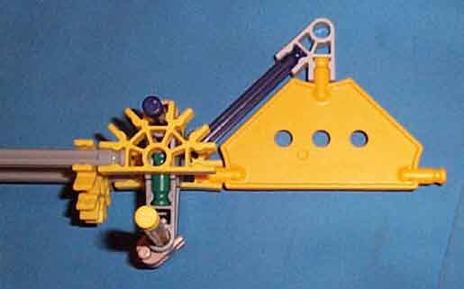

There is one bit state indicator mounted to one end of each bit assembly. The bit state indicator provides clear indication of whether a bit is set or clear.
The picture shows the bit state indicator mounted onto the end inverted pendulum assembly of a bit assembly.